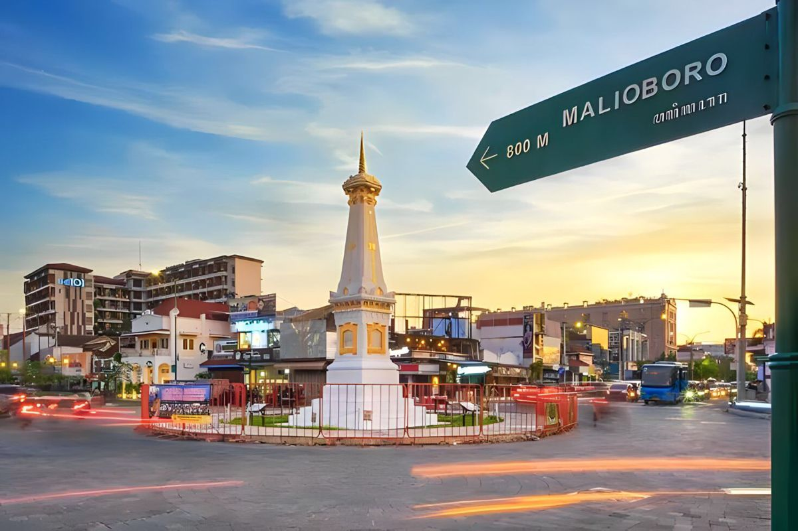

Sebagai satu-satunya kota kerajaan Indonesia yang masih berada di bawah pemerintahan monarki, Yogyakarta dianggap sebagai pusat penting seni dan budaya klasik Jawa, seperti tari, tekstil batik, drama, sastra, musik, puisi, seni ukir perak, seni rupa, dan pertunjukan wayang. Dikenal sebagai pusat pendidikan Indonesia, Yogyakarta menjadi rumah bagi populasi mahasiswa yang besar dan puluhan sekolah dan universitas, termasuk Universitas Gadjah Mada, institusi pendidikan tinggi terbesar di negara ini dan salah satu yang paling bergengsi. Yogyakarta adalah ibu kota Kesultanan Yogyakarta dan pernah menjadi ibu kota Indonesia dari tahun 1946 hingga 1948 selama Revolusi Nasional Indonesia, dengan Gedung Agung sebagai kantor presiden. Salah satu distrik di bagian tenggara Yogyakarta, Kotagede, adalah ibu kota Kesultanan Mataram antara tahun 1587 dan 1613.